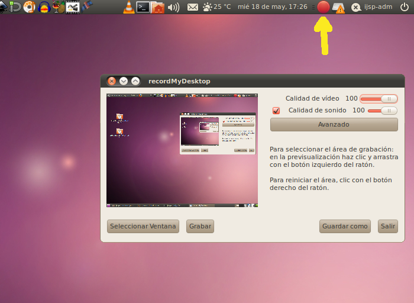

Captura de Pantalla
Una manera divertida y fácil de crear videos es simplemente
capturar lo que está ocurriendo en tu pantalla de computador. Esto
puede ser especialmente útil para crear demonstraciones, como un video
sobre cómo usar un programa.
En Ubuntu, esto es muy fácil de configurar. Vamos a abrir el
programa gtk-RecordMyDesktop (también conocido como "Desktop
Recorder"). Cuando abras el programa, vas a ver un par de sliders de
calidad (déjalos a 100%; si quieres comprimir los videos lo puedes
hacer más adelante) y unos cunatos botones.
Ademas verás un indicador (el botón grande rojo de grabar) del
programa en el "system tray". Cuando comiences a grabar el video, el
botón de grabación va a cambiar a un botón de detener; haz clic en ese
botón para detener la grabación. 
Para
comenzar a capturar tu video, haz clic en el botón de "Guardar como..."
para seleccionar un archivo al cual vas a almacenar tu video. Tienes la
opción de escojer una ventana y solo grabar lo que ocurre en esa
ventana. Además de todo lo que ocurre en la pantalla, este programa va
a grabar el audio que entra por tu micrófono, así que puedes ir
explicando lo que estás haciendo en el video mientras lo haces.
Aquí hay un video creado usando recordMyDesktop.